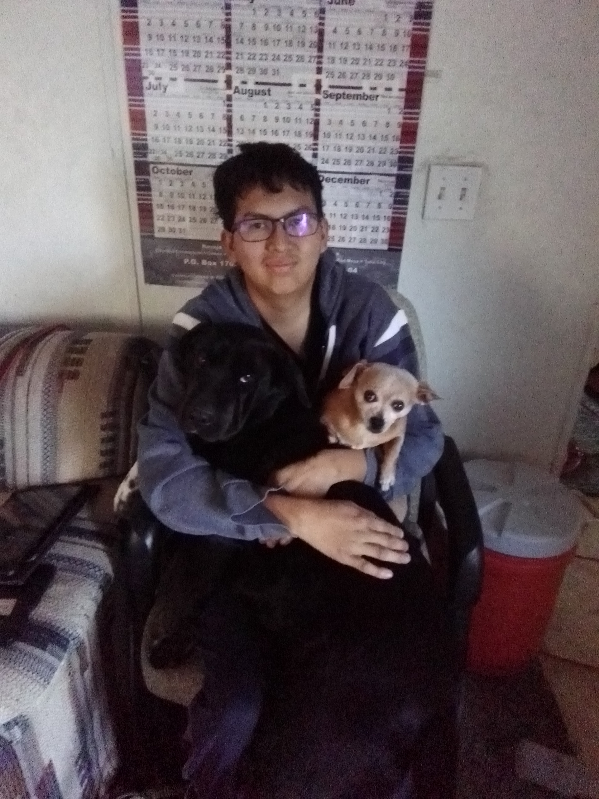

About Me
I live in the desolate wasteland called No Water Mesa, Arizona, its very close to Red Mesa. Well that's just an exageration, It's actually a nice place. A lot of the location is just sand and tumbleweeds. But enough about that. That's where I am from. I have been just trying all types of hobbies and things. I've dabbled in some programming languages:
- C#
- Javascript
- Python
- HTML & CSS
I've only done some of the programs. I have very basic knowledge of most while others like the C
programming languages and Javascript
are the most challenging to me.
I've tried coding on a Desktop. It's smooth and fast, but doing so on a laptop thats at least at the bare minimum, it is really slow and takes some time to compile everything.
Well anyway, I have been learning how to code since 15, but when you have no internet, it can be a pain to do. Living in the rural parts of Arizona so far from any fast internet connection speeds
and only having cable connected internet is very slow. About 6 years ago, the fastest wifi speed I saw using my dad's internet was only 0.7mbps. So far over the years, it has slowly went up, so now the
internet speeds are as close to 2.5mbps. That's why I enrolled into Coding Temple in hopes that I can further my knowledge of coding and make a great career out of it.
Past to Now
From when I was 9, I wanted to learn how to develop my own games. I even still have an idea and the plans to make it. Maybe one of these days I will get onto the foundations and develop it for others to play. As time went on, I slowly started to change my views on technology. I learned of how the tech industry has boomed with new advancements of keeping the web safe from potentially harmful information.
When I turned 14, I decided I wanted to be a Red-Teamer
in Cybersecurity. Pen-testing and becoming an ethical hacker, helping those to better protect themselves online. I did my research and was about to finalize it when, I'm not sure what changed my mind yet again, but I wanted to try to become something that has knowledge in everything and can be transferable. So I landed on a Software Engineer.
And so here I am. That's pretty much all about me. There's nothing else except that I tend to learn more better with hands on rather than just reading something. I can still learn by reading but it takes me a while longer to do so.